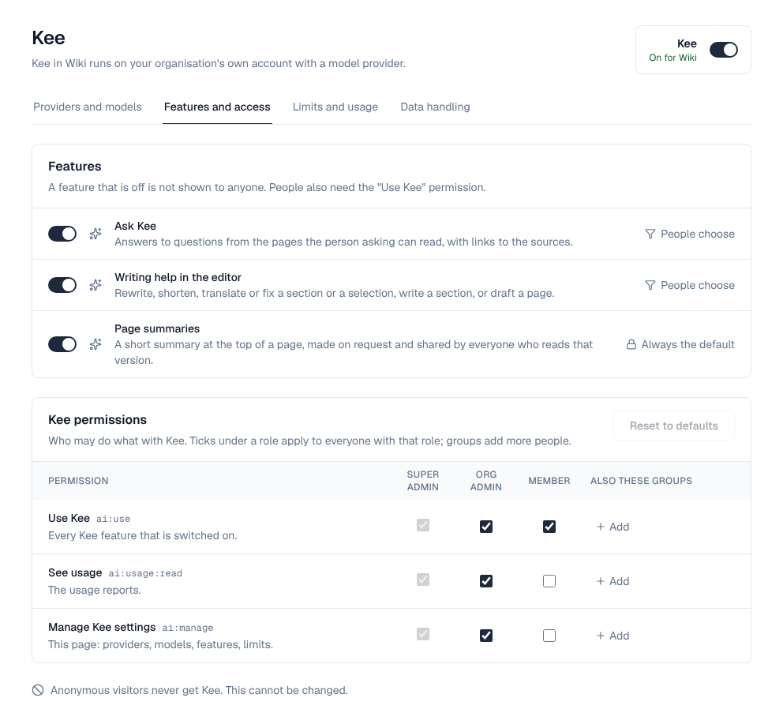

Settings → Kee → Features and access switches each feature on or off and holds the Kee permissions grid.

1. Features
| Feature | What it is | Model |
|---|---|---|
| Ask Kee | Answers to questions from the pages the person asking can read, with links to the sources. See Ask Kee | People choose |
| Writing help in the editor | Rewrite, shorten, translate or fix a section or a selection, write a section, or draft a page. See Writing with Kee | People choose |
| Page summaries | A short summary at the top of a page, made on request and shared by everyone who reads that version. See Page summaries | Always the default |
| Kee studio | People build agents: Kee with instructions, chosen spaces and pages, and a set of allowed actions. See Kee studio | The agent's, or the default |
| Change summaries | What changed between two versions of a page, in plain words, made on request in the page's history and shared by everyone who compares the same versions. See Page history | Always the default |
| Title and label suggestions | While editing, a few titles or labels from the page's text; the person picks one or none. See Titles, labels and duplicate pages | Always the default |
| Duplicate page warning | Off by default. When a new page gets its title, pages the person can read on the same subject, and a merge into one of them as a proposal. See Titles, labels and duplicate pages | Always the default |
| Images | Off by default. Describe with Kee proposes alt text and a caption in the image dialog, and people add images to questions in Ask Kee. Only models marked Reads images are sent images. See Images and Kee | The default to describe; people choose in Ask Kee |
| Import cleanup | After an import, offers to tidy the pages it made: imported blocks that did not come across, empty layout, headings, and links that had no target. Each tidy-up is a proposal the person applies. Also needs Ask Kee on. See Tidy imported pages | Always the default |
These are on once Kee is on, except the two marked off by default. A feature that is off isn't shown to anyone, and its requests are refused. Each switch applies on every server at once. The writing helpers (style review, action items, diagrams, tables) belong to Writing help in the editor.
Below them, the Scheduled help card holds the features that run without anyone asking (the stale page finder, suggestions for new questions, the space digest and, where the database offers it, search by meaning), off by default, and their own monthly budget. See Scheduled help.
2. Permissions
Who may use Kee is set here, not in the system roles. A tick under a role applies to everyone with that role; Also these groups adds the members of groups, whatever their role. Super admins always hold every permission.
| Permission | Allows | Who holds it |
|---|---|---|
| Use Kee (ai:use) | Every Kee feature that is switched on | Org admins and members by default; set here |
| See usage (ai:usage:read) | The usage report and its CSV export | Super admins only (not in the grid) |
| Manage Kee settings (ai:manage) | Settings → Kee: providers, models, features, limits, data handling, outside AI apps | Super admins only (not in the grid) |
| Make agents (wiki_agents:create) | Build, try and publish agents in Kee studio, and share them with people, groups and spaces | Org admins by default; set here |
| Share agents with everyone (wiki_agents:share_all) | Offer an agent to the whole organization (Everyone in the wiki) | Org admins by default; set here |
| Manage everyone's agents (wiki_agents:manage) | See, pause, share and remove agents made by other people, and take over an agent whose owner left | Org admins by default; set here |
| Connect AI apps (wiki_outside_apps:connect) | Connect their own AI apps to the Wiki's built-in server (Connect AI apps) | Org admins by default; set here or on the Outside AI apps tab |
- Change the ticks and groups, then save. Reset to defaults puts back the defaults above. The grid can be saved while Kee is off, so who may connect AI apps can be set without Kee.
- Using an agent someone shared needs only Use Kee, not Make agents.
- An API token used for Kee needs the permission among its scopes too.
- Anonymous visitors never get Kee. This can't be changed.
- Using Kee also needs access to the content: editing the page for writing help, reading the page for a summary or an answer. Kee never widens what a person can do.
- A space's admins can turn Kee off in their space, whatever the permissions: see Kee in a space.
Settings → Kee and the usage report stay with super admins: they hold the installation's providers, budget and the server's own cloud role, and list usage by person across every organization, so the grid can't give them to a role or a group.
3. Events and audit
Saving the grid raises ai.permissions.update and changing settings ai.settings.update; both are in the audit log and can be refused by a policy. See Events.